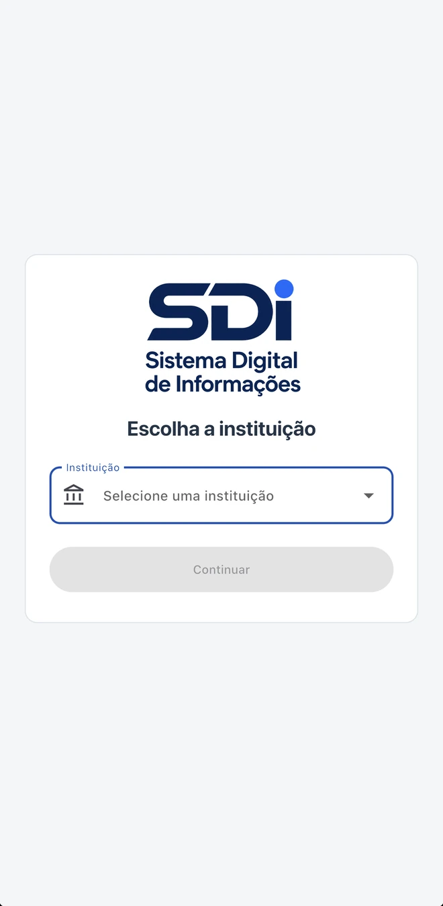
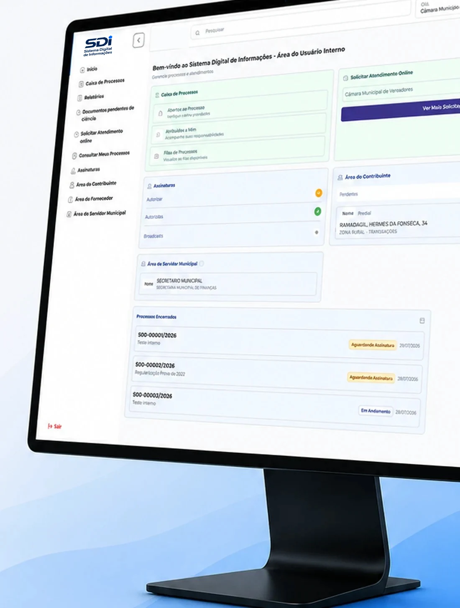
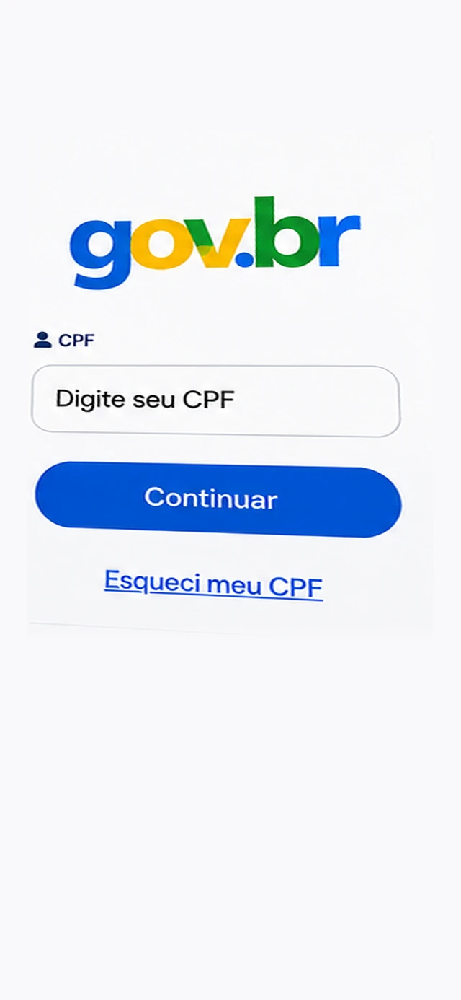
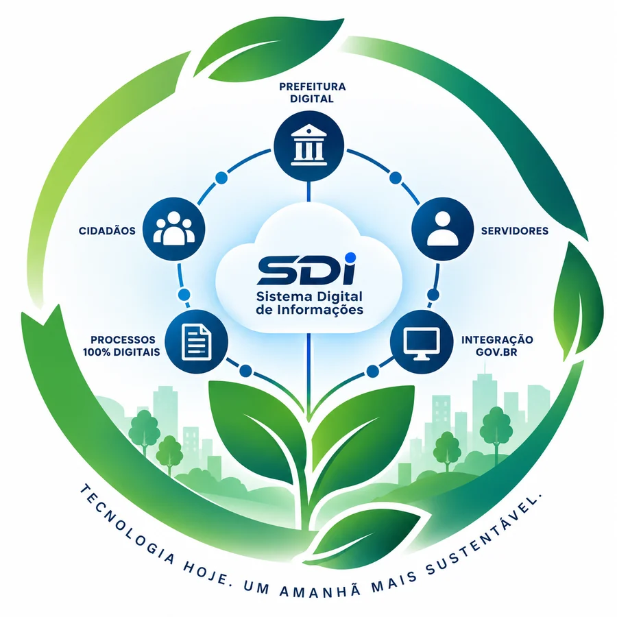

Digitalização
Processos e documentos deixam o papel e passam a tramitar em ambiente digital.
Sistema Digital de Informações
Um único ecossistema para conectar servidores, contribuintes, cidadãos e Administração Pública.
O SDI transforma processos administrativos em fluxos totalmente digitais, permitindo que solicitações, documentos, tramitações, assinaturas e acompanhamentos aconteçam eletronicamente.
Menos papel. Menos burocracia. Mais eficiência.

Gestão pública digital
O SDI substitui o papel nos fluxos administrativos da prefeitura e reúne num só ambiente a tramitação, a assinatura e o acompanhamento dos processos.
01
Memorandos, portarias, licitações e solicitações tramitam sem papel.
02
Documentos assinados digitalmente, sem impressão nem deslocamento.
03
Acompanhamento de cada etapa do processo, a qualquer hora.
Para a administração pública
Na área interna, servidores e gestores abrem, tramitam, assinam e arquivam processos sem circulação de papel — com histórico registrado em cada etapa.

Acesso ao sistema
O acesso ao SDI é feito com a conta Gov.br. Após a autenticação, o sistema apresenta os processos vinculados ao CPF ou CNPJ — com busca por protocolo, assunto ou palavra-chave e o andamento de cada etapa.

Aplicativo SDI
O aplicativo SDI — Sistema Digital de Informações leva os serviços digitais da Administração Pública diretamente para o celular, aproximando cidadãos, contribuintes e servidores públicos da Prefeitura.
O aplicativo permite uma experiência mais simples, ágil e digital, reduzindo a necessidade de deslocamentos, documentos impressos e atendimentos presenciais.
Benefícios
Processos e documentos deixam o papel e passam a tramitar em ambiente digital.
Assinatura eletrônica e tramitação imediata, sem circulação física de documentos.
Histórico registrado em cada etapa e acompanhamento aberto ao cidadão.
Menos dependência de consultas presenciais para acompanhar solicitações.
Solução em nuvem, acessível de qualquer lugar e em diferentes dispositivos.
Menos papel, menos impressão e menor dependência de arquivos físicos.
| Processo tradicional | Ecossistema SDI |
|---|---|
| Papel | Documento digital |
| Protocolo presencial | Solicitação online |
| Pastas físicas | Processos digitais |
| Transporte de documentos | Tramitação eletrônica |
| Assinatura manual | Assinatura eletrônica pelo gov.br |
| Arquivos físicos | Armazenamento digital |
| Consulta presencial | Acompanhamento online |
| Processos isolados | Ecossistema integrado |
Conheça a ISA
A ISA é a inteligência artificial nativa do SDI. Ela auxilia os usuários na criação de modelos de documentos, esclarece dúvidas, simplifica rotinas, facilita o acesso às informações e apoia a execução das atividades no sistema. O resultado é mais produtividade e automação, com menos trabalho operacional na gestão pública.
ISA + SDI: IA aplicada à gestão pública para gerar eficiência, inovação e melhores resultados.
Workflow
Com o Workflow do SDI – Sistema Digital de Informações, cada processo pode ter seu fluxo previamente configurado, estabelecendo etapas, responsáveis, regras e condições específicas para avanço, encaminhamento ou devolução.
O próprio sistema orienta a tramitação conforme as regras definidas pela Administração, tornando todo o processo mais simples, intuitivo, seguro e padronizado.
Mais controle. Menos erros. Mais eficiência.
SDI – Processos inteligentes. Fluxos seguros. Gestão 100% digital.

O SDI organiza o fluxo de informações entre cidadãos, contribuintes, servidores, departamentos e secretarias, criando um ambiente digital para tramitação e acompanhamento dos processos administrativos.
O resultado é uma rotina sem circulação física de documentos, com maior organização das informações e mais facilidade para acompanhar cada etapa do processo.
A Prefeitura aberta 24 horas no ambiente digital.
Precisa ter